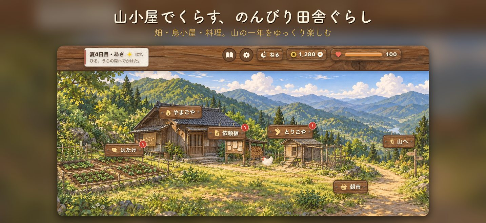
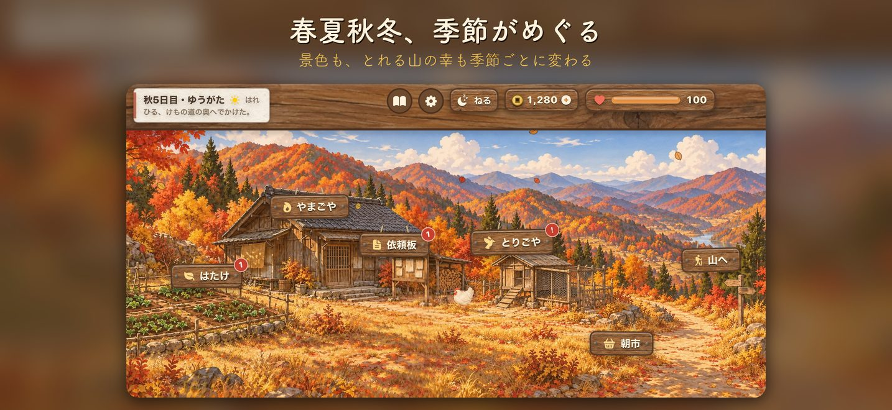
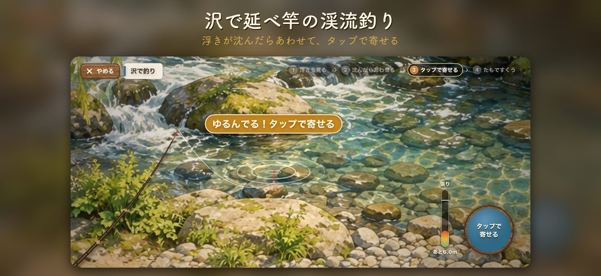
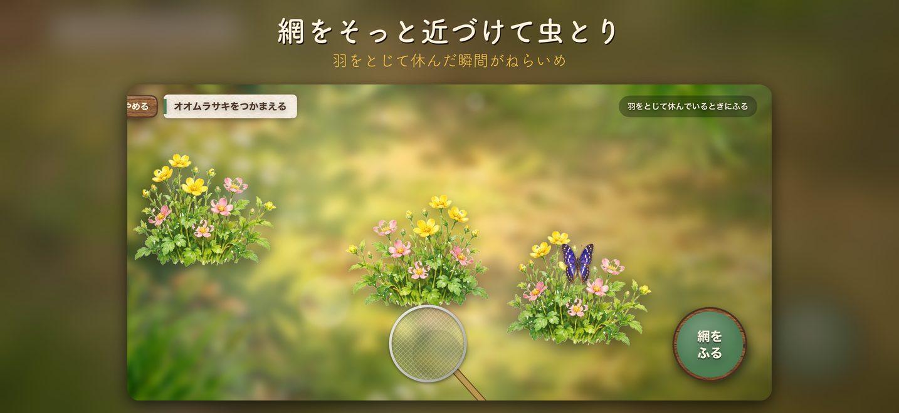
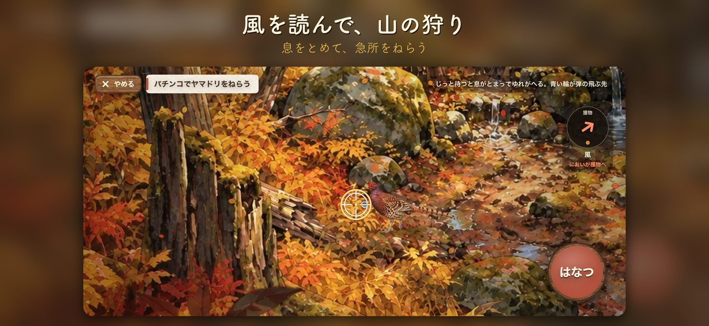
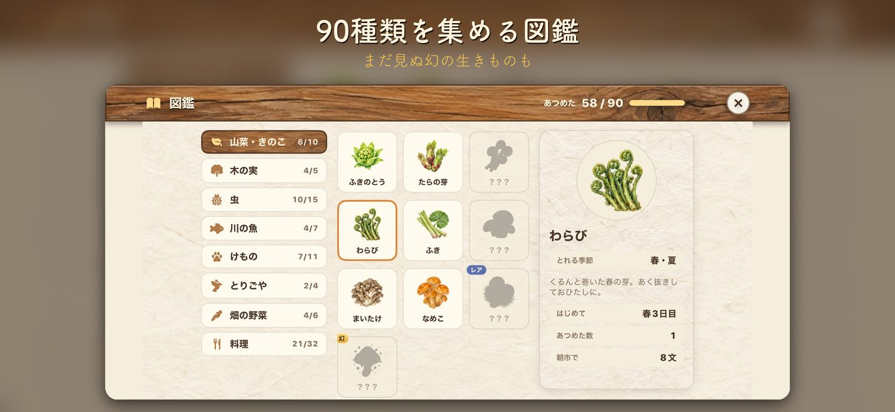

やまぐらしとは
やまぐらしは、山小屋でくらしながら畑や鳥の世話をし、山で釣り・虫とり・狩り・山菜採りをして四季をすごす、iPhone向けのスローライフゲームです。手描き風の水彩画で描かれた日本の山里で、春・夏・秋・冬がめぐる一年を、自分のペースでゆっくり楽しめます。
- ジャンル
- スローライフ・シミュレーション（ひとり用）
- 料金
- 無料（アプリ内課金なし）
- 広告
- 自分で選んで見るリワード広告のみ
- 対応端末
- iPhone（iOS 17以上）・横画面
- データ
- iPhoneの中とご自身のiCloudに保存
- 言語
- 日本語
できること






よくある質問
無料で遊べますか？
はい。アプリ内課金はなく、無料で最後まで遊べます。
広告は出ますか？
勝手に流れる広告はありません。広告を見ると、ゲームの中だけで使える「ぜに（文）」や、作物・たまごなどのおまけがもらえます。ぜには本物のお金ではなく、換金したりゲームの外で使ったりすることはできません。広告を見るかどうかは自由で、見なくても最後まで遊べます。ぜにがもらえる広告は 1 日 3 回までです。
オフラインでも遊べますか？
遊べます。インターネットを使うのは、広告を見るときと、iCloud に記録を保存するときだけです。
遊んだ記録はどこに保存されますか？
お使いの iPhone の中に保存されます。iCloud が使える状態なら、あなたの iCloud にも保存され、同じ Apple アカウントの別の iPhone に引きつげます。運営者が記録を受け取ることはありません。
機種変更したら続きから遊べますか？
新しい iPhone で同じ Apple アカウントにサインインし、iCloud を使える状態にしてからアプリを入れると、続きから遊べます。iPhone のバックアップから復元した場合も引きつがれます。
アプリを消すとどうなりますか？
iPhone の中の記録は消えます。iCloud に保存された記録は残るので、入れなおすと戻せます。
どんな生きものや食材が集められますか？
山菜・きのこ、木の実、虫 14 種類、川の魚、けもの、とりごやのもの、畑の野菜、料理の合計 90 種類を図鑑に集められます。黄金ヤマメや黄金カブトなど、ごくまれにしか出会えない幻の生きものもいます。
対応している端末は？
iOS 17 以上の iPhone です。横画面で遊ぶゲームです。
お問い合わせ
不具合やご意見は、こちらのメールアドレスまでお送りください。
不具合のときは、お使いの iPhone の機種と iOS のバージョン、どんな操作をしたときに起きたかを書いていただけると助かります。